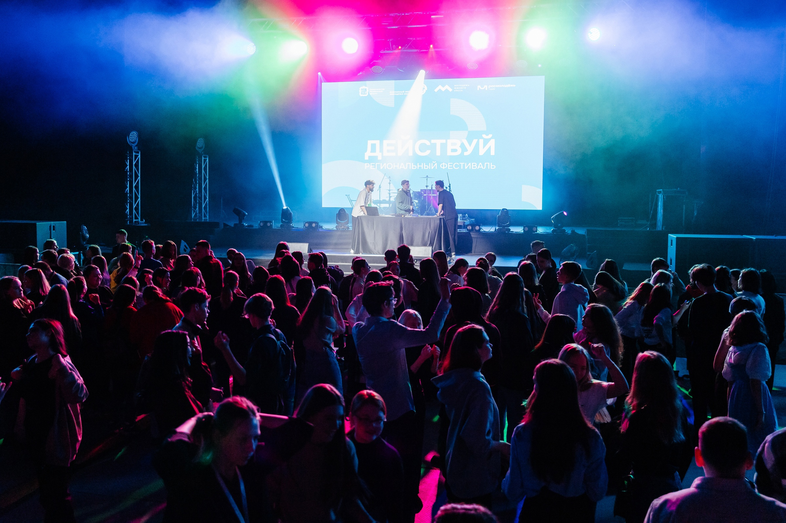
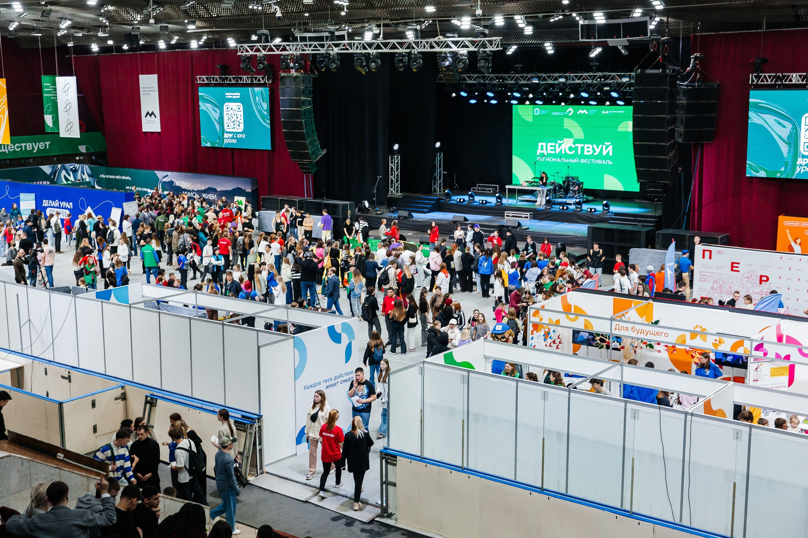
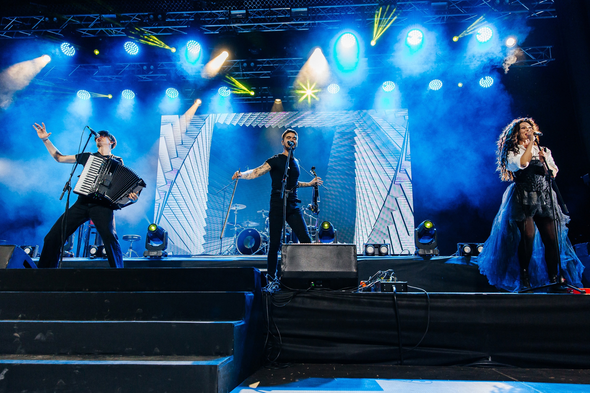

Фестиваль «Действуй»
16-17 марта 2024г. я был на фетивале под названием «Действуй». Это мероприятие проходило в Дворец Спорта «Юность», куда мог попасть каждый желающий! Я туда попал, потому что меня пригласила моя подруга, а после оказалось, что туда идёт много моих друзей. На фестивале было достаточно много интересных мест, где можно было весело провести время, например, стенд с очками виртуальной реальности, рисование красками и песком, мини парикмахерская, стенды с едой и так далее.
Впечатления и мероприятия
Сначала я не понимал, что мне делать и куда идти, так как было очень много людей и различных стендов. Но позже я с друзьями участвовали в разных конкурсах и ходили в лабиринте стендов. Если уставали, то всегда были места, чтобы присесть отдохнуть или просто поболтать.
Было достаточно много мероприятий и конкурсов. Самые запоминающиеся для меня были: лотерея, которая проходила чуть ли не каждые пол часа, если чаще. Битва пацанов-трюкачей, которые по очереди делали различные трюки и по реакции зрителей выбирались лучшие. Также удивил приезд Текслера, который ходил по всему «лабиринту» из стендов. Было достаточно забавно за ним наблюдать, потому что за его спиной тянулась огромная очередь из людей, которые ходили за ним и не отставали, пока он не ушёл с фестиваля. Но больше всего мне понравился концерт группы «The Hatters», которая несколько часов танцевала и пела. Я прям кайфанул и был очень счастлив, так как это был первый концерт, на котором на смог побывать!
